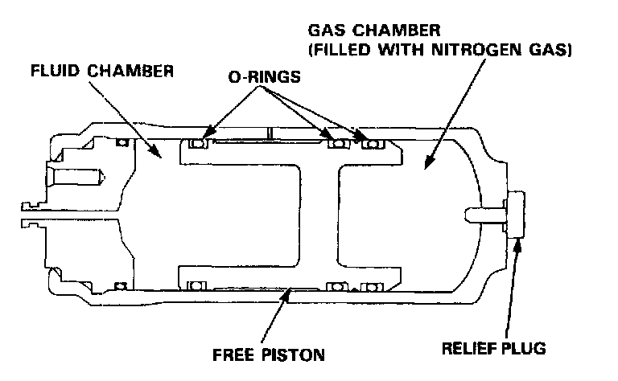

Brake Fluid Accumulator: Description and Operation

Accumulator
The high-pressure brake fluid discharged from the pump is fed to the solenoids and pistons, but the passages to the solenoids and pistons are normally closed. Consequently, the high-pressure brake fluid accumulates in the accumulator.
The accumulator consists of two chambers separated by a free piston; that is, the fluid chamber where the brake fluid is accumulated, and the chamber filled with high-pressure nitrogen gas to maintain the fluid at a given pressure.
When the ABS operates, the constant high-pressure brake fluid in the accumulator is supplied to the piston.